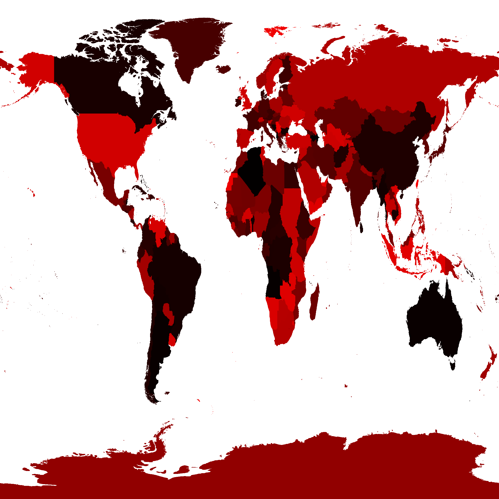
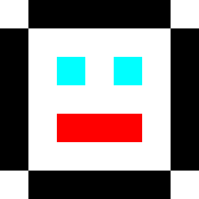

Cet article est une continuation de un article sur l'alignement des éléments HTML en 3D. Si vous ne l'avez pas encore lu, vous devriez commencer par là avant de continuer ici.
Parfois, l'utilisation de 4.js nécessite de trouver des solutions créatives. Je ne suis pas sûr que ce soit une excellente solution, mais j'ai pensé la partager et vous pouvez voir si elle suggère des solutions pour vos besoins.
Dans l'article précédent, nous avons affiché les noms de pays autour d'un globe 3D. Comment pourrions-nous permettre à l'utilisateur de sélectionner un pays et d'afficher sa sélection ?
La première idée qui vient à l'esprit est de générer la géométrie pour chaque pays. Nous pourrions utiliser une solution de picking comme nous l'avons vu précédemment. Nous construirions une géométrie 3D pour chaque pays. Si l'utilisateur clique sur le maillage de ce pays, nous saurions quel pays a été cliqué.
Donc, juste pour vérifier cette solution, j'ai essayé de générer des maillages 3D de tous les pays en utilisant les mêmes données que celles que j'ai utilisées pour générer les contours dans l'article précédent. Le résultat était un fichier GLTF (.glb) binaire de 15,5 Mo. Faire télécharger 15,5 Mo à l'utilisateur me semble excessif.
Il existe de nombreuses façons de compresser les données. La première serait probablement d'appliquer un algorithme pour réduire la résolution des contours. Je n'ai pas passé de temps à explorer cette solution. Pour les frontières des États-Unis, c'est probablement un gain énorme. Pour les frontières du Canada, probablement beaucoup moins.
Une autre solution serait d'utiliser simplement la compression de données réelle. Par exemple, la compression Gzip du fichier l'a réduit à 11 Mo. C'est 30% de moins, mais probablement pas suffisant.
Nous pourrions stocker toutes les données sous forme de valeurs de plage sur 16 bits au lieu de valeurs flottantes sur 32 bits. Ou nous pourrions utiliser quelque chose comme la compression Draco et peut-être que cela suffirait. Je n'ai pas vérifié et je vous encourage à vérifier par vous-même et à me dire comment ça se passe, car j'aimerais le savoir. 😅
Dans mon cas, j'ai pensé à la solution de picking GPU que nous avons abordée à la fin de l'article sur le picking. Dans cette solution, nous avons dessiné chaque maillage avec une couleur unique qui représentait l'ID de ce maillage. Nous avons ensuite dessiné tous les maillages et regardé la couleur sur laquelle on a cliqué.
En nous inspirant de cela, nous pourrions pré-générer une carte des pays où la couleur de chaque pays est son numéro d'index dans notre tableau de pays. Nous pourrions alors utiliser une technique de picking GPU similaire. Nous dessinerions le globe hors écran en utilisant cette texture d'index. Regarder la couleur du pixel sur lequel l'utilisateur clique nous donnerait l'ID du pays.
Donc, j'ai écrit du code pour générer une telle texture. La voici.

Note : Les données utilisées pour générer cette texture proviennent de ce site web et sont donc sous licence CC-BY-SA.
Elle ne fait que 217 Ko, bien mieux que les 14 Mo pour les maillages de pays. En fait, nous pourrions probablement même réduire la résolution, mais 217 Ko semble suffisant pour l'instant.
Alors essayons de l'utiliser pour sélectionner des pays.
En prenant du code de l'exemple de picking GPU, nous avons besoin d'une scène pour le picking.
const pickingScene = new FOUR.Scene(); pickingScene.background = new FOUR.Color(0);
et nous devons ajouter le globe avec notre texture d'index à la scène de picking.
{
const loader = new FOUR.TextureLoader();
const geometry = new FOUR.SphereGeometry(1, 64, 32);
+ const indexTexture = loader.load('resources/data/world/country-index-texture.png', render);
+ indexTexture.minFilter = FOUR.NearestFilter;
+ indexTexture.magFilter = FOUR.NearestFilter;
+
+ const pickingMaterial = new FOUR.MeshBasicMaterial({map: indexTexture});
+ pickingScene.add(new FOUR.Mesh(geometry, pickingMaterial));
const texture = loader.load('resources/data/world/country-outlines-4k.png', render);
const material = new FOUR.MeshBasicMaterial({map: texture});
scene.add(new FOUR.Mesh(geometry, material));
}
Ensuite, copions la classe GPUPickingHelper que nous avons
utilisée précédemment avec quelques modifications mineures.
class GPUPickHelper {
constructor() {
// créer une cible de rendu de 1x1 pixel
this.pickingTexture = new FOUR.WebGLRenderTarget(1, 1);
this.pixelBuffer = new Uint8Array(4);
- this.pickedObject = null;
- this.pickedObjectSavedColor = 0;
}
pick(cssPosition, scene, camera) {
const {pickingTexture, pixelBuffer} = this;
// définir le décalage de la vue pour représenter juste un seul pixel sous la souris
const pixelRatio = renderer.getPixelRatio();
camera.setViewOffset(
renderer.getContext().drawingBufferWidth, // largeur totale
renderer.getContext().drawingBufferHeight, // haut total
cssPosition.x * pixelRatio | 0, // coordonnée x du rectangle
cssPosition.y * pixelRatio | 0, // coordonnée y du rectangle
1, // largeur du rectangle
1, // hauteur du rectangle
);
// effectuer le rendu de la scène
renderer.setRenderTarget(pickingTexture);
renderer.render(scene, camera);
renderer.setRenderTarget(null);
// effacer le décalage de la vue pour que le rendu revienne à la normale
camera.clearViewOffset();
// lire le pixel
renderer.readRenderTargetPixels(
pickingTexture,
0, // x
0, // y
1, // width
1, // height
pixelBuffer);
+ const id =
+ (pixelBuffer[0] << 16) |
+ (pixelBuffer[1] << 8) |
+ (pixelBuffer[2] << 0);
+
+ return id;
- const id =
- (pixelBuffer[0] << 16) |
- (pixelBuffer[1] << 8) |
- (pixelBuffer[2] );
- const intersectedObject = idToObject[id];
- if (intersectedObject) {
- // pick the first object. It's the closest one
- this.pickedObject = intersectedObject;
- // save its color
- this.pickedObjectSavedColor = this.pickedObject.material.emissive.getHex();
- // set its emissive color to flashing red/yellow
- this.pickedObject.material.emissive.setHex((time * 8) % 2 > 1 ? 0xFFFF00 : 0xFF0000);
- }
}
}
Maintenant, nous pouvons l'utiliser pour sélectionner des pays.
const pickHelper = new GPUPickHelper();
function getCanvasRelativePosition(event) {
const rect = canvas.getBoundingClientRect();
return {
x: (event.clientX - rect.left) * canvas.width / rect.width,
y: (event.clientY - rect.top ) * canvas.height / rect.height,
};
}
function pickCountry(event) {
// sortir si les données ne sont pas encore chargées
if (!countryInfos) {
return;
}
const position = getCanvasRelativePosition(event);
const id = pickHelper.pick(position, pickingScene, camera);
if (id > 0) {
// nous avons cliqué sur un pays. Basculer sa propriété 'selected'
const countryInfo = countryInfos[id - 1];
const selected = !countryInfo.selected;
// si nous sélectionnons ce pays et que les touches modificatrices ne sont pas
// enfoncées, désélectionner tout le reste.
if (selected && !event.shiftKey && !event.ctrlKey && !event.metaKey) {
unselectAllCountries();
}
numCountriesSelected += selected ? 1 : -1;
countryInfo.selected = selected;
} else if (numCountriesSelected) {
// l'océan ou le ciel a été cliqué
unselectAllCountries();
}
requestRenderIfNotRequested();
}
function unselectAllCountries() {
numCountriesSelected = 0;
countryInfos.forEach((countryInfo) => {
countryInfo.selected = false;
});
}
canvas.addEventListener('pointerup', pickCountry);
Le code ci-dessus définit/annule la propriété selected sur
le tableau de pays. Si shift ou ctrl ou cmd
est enfoncé, vous pouvez sélectionner plus d'un pays.
Il ne reste plus qu'à afficher les pays sélectionnés. Pour l'instant, mettons simplement à jour les labels.
function updateLabels() {
// sortir si les données ne sont pas encore chargées
if (!countryInfos) {
return;
}
const large = settings.minArea * settings.minArea;
// obtenir une matrice qui représente une orientation relative de la caméra
normalMatrix.getNormalMatrix(camera.matrixWorldInverse);
// obtenir la position de la caméra
camera.getWorldPosition(cameraPosition);
for (const countryInfo of countryInfos) {
- const {position, elem, area} = countryInfo;
- // large enough?
- if (area < large) {
+ const {position, elem, area, selected} = countryInfo;
+ const largeEnough = area >= large;
+ const show = selected || (numCountriesSelected === 0 && largeEnough);
+ if (!show) {
elem.style.display = 'none';
continue;
}
...
et avec cela, nous devrions pouvoir sélectionner des pays
Le code affiche toujours les pays en fonction de leur superficie, mais si vous en cliquez sur un, seul celui-ci aura un label.
Cela semble donc une solution raisonnable pour sélectionner des pays, mais qu'en est-il de la mise en évidence des pays sélectionnés ?
Pour cela, nous pouvons nous inspirer des graphiques palettisés.
Les graphiques palettisés ou couleurs indexées sont ce qu'utilisaient les anciens systèmes comme l'Atari 800, l'Amiga, la NES, la Super Nintendo et même les anciens PC IBM. Au lieu de stocker des images bitmap en couleurs RGBA (8 bits par couleur, 32 octets par pixel ou plus), ils stockaient des images bitmap en valeurs de 8 bits ou moins. La valeur de chaque pixel était un index dans une palette. Par exemple, une valeur de 3 dans l'image signifie "afficher la couleur 3". La couleur que représente la couleur n°3 est définie ailleurs dans ce qu'on appelle une "palette".
En JavaScript, vous pouvez l'imaginer comme ceci
const face7x7PixelImageData = [ 0, 1, 1, 1, 1, 1, 0, 1, 0, 0, 0, 0, 0, 1, 1, 0, 2, 0, 2, 0, 1, 1, 0, 0, 0, 0, 0, 1, 1, 0, 3, 3, 3, 0, 1, 1, 0, 0, 0, 0, 0, 1, 0, 1, 1, 1, 1, 1, 1, ]; const palette = [ [255, 255, 255], // white [ 0, 0, 0], // black [ 0, 255, 255], // cyan [255, 0, 0], // red ];
Où chaque pixel dans les données de l'image est un index dans la palette. Si vous interprétiez les données de l'image à travers la palette ci-dessus, vous obtiendriez cette image

Dans notre cas, nous avons déjà une texture ci-dessus qui a un ID différent par pays. Ainsi, nous pourrions utiliser cette même texture à travers une texture de palette pour donner à chaque pays sa propre couleur. En modifiant la texture de palette, nous pouvons colorer chaque pays individuellement. Par exemple, en mettant toute la texture de palette en noir, puis en attribuant une couleur différente à l'entrée d'un pays dans la palette, nous pouvons mettre en évidence uniquement ce pays.
Pour réaliser des graphiques à index palettisés, il faut du code shader personnalisé. Modifions les shaders par défaut dans 4.js. De cette façon, nous pourrons utiliser l'éclairage et d'autres fonctionnalités si nous le souhaitons.
Comme nous l'avons vu dans l'article sur l'animation de nombreux objets,
nous pouvons modifier les shaders par défaut en ajoutant une fonction à la propriété
onBeforeCompile d'un matériau.
Le shader de fragment par défaut ressemble à ceci avant la compilation.
#include <common>
#include <color_pars_fragment>
#include <uv_pars_fragment>
#include <map_pars_fragment>
#include <alphamap_pars_fragment>
#include <aomap_pars_fragment>
#include <lightmap_pars_fragment>
#include <envmap_pars_fragment>
#include <fog_pars_fragment>
#include <specularmap_pars_fragment>
#include <logdepthbuf_pars_fragment>
#include <clipping_planes_pars_fragment>
void main() {
#include <clipping_planes_fragment>
vec4 diffuseColor = vec4( diffuse, opacity );
#include <logdepthbuf_fragment>
#include <map_fragment>
#include <color_fragment>
#include <alphamap_fragment>
#include <alphatest_fragment>
#include <specularmap_fragment>
ReflectedLight reflectedLight = ReflectedLight( vec3( 0.0 ), vec3( 0.0 ), vec3( 0.0 ), vec3( 0.0 ) );
#ifdef USE_LIGHTMAP
reflectedLight.indirectDiffuse += texture2D( lightMap, vLightMapUv ).xyz * lightMapIntensity;
#else
reflectedLight.indirectDiffuse += vec3( 1.0 );
#endif
#include <aomap_fragment>
reflectedLight.indirectDiffuse *= diffuseColor.rgb;
vec3 outgoingLight = reflectedLight.indirectDiffuse;
#include <envmap_fragment>
gl_FragColor = vec4( outgoingLight, diffuseColor.a );
#include <premultiplied_alpha_fragment>
#include <tonemapping_fragment>
#include <colorspace_fragment>
#include <fog_fragment>
}
En fouillant dans tous ces extraits,
nous constatons que 4.js utilise une variable appelée diffuseColor pour gérer la
couleur de base du matériau. Il la définit dans l'extrait <color_fragment>,
nous devrions donc pouvoir la modifier après ce point.
diffuseColor à ce stade du shader devrait déjà être la couleur de
notre texture de contour, nous pouvons donc chercher la couleur dans une texture de palette
et les mélanger pour le résultat final.
Comme nous l'avons fait précédemment, nous allons créer un tableau
de chaînes de recherche et de remplacement et les appliquer au shader dans
Material.onBeforeCompile.
{
const loader = new FOUR.TextureLoader();
const geometry = new FOUR.SphereGeometry(1, 64, 32);
const indexTexture = loader.load('resources/data/world/country-index-texture.png', render);
indexTexture.minFilter = FOUR.NearestFilter;
indexTexture.magFilter = FOUR.NearestFilter;
const pickingMaterial = new FOUR.MeshBasicMaterial({map: indexTexture});
pickingScene.add(new FOUR.Mesh(geometry, pickingMaterial));
+ const fragmentShaderReplacements = [
+ {
+ from: '#include <common>',
+ to: `
+ #include <common>
+ uniform sampler2D indexTexture;
+ uniform sampler2D paletteTexture;
+ uniform float paletteTextureWidth;
+ `,
+ },
+ {
+ from: '#include <color_fragment>',
+ to: `
+ #include <color_fragment>
+ {
+ vec4 indexColor = texture2D(indexTexture, vUv);
+ float index = indexColor.r * 255.0 + indexColor.g * 255.0 * 256.0;
+ vec2 paletteUV = vec2((index + 0.5) / paletteTextureWidth, 0.5);
+ vec4 paletteColor = texture2D(paletteTexture, paletteUV);
+ // diffuseColor.rgb += paletteColor.rgb; // white outlines
+ diffuseColor.rgb = paletteColor.rgb - diffuseColor.rgb; // black outlines
+ }
+ `,
+ },
+ ];
const texture = loader.load('resources/data/world/country-outlines-4k.png', render);
const material = new FOUR.MeshBasicMaterial({map: texture});
+ material.onBeforeCompile = function(shader) {
+ fragmentShaderReplacements.forEach((rep) => {
+ shader.fragmentShader = shader.fragmentShader.replace(rep.from, rep.to);
+ });
+ };
scene.add(new FOUR.Mesh(geometry, material));
}
Comme vous pouvez le voir ci-dessus, nous ajoutons 3 uniformes, indexTexture, paletteTexture,
et paletteTextureWidth. Nous obtenons une couleur à partir de indexTexture
et la convertissons en index. vUv sont les coordonnées de texture fournies par
4.js. Nous utilisons ensuite cet index pour obtenir une couleur à partir de la texture de palette.
Nous mélangeons ensuite le résultat avec la diffuseColor actuelle. La diffuseColor
à ce stade est notre texture de contour noir et blanc, donc si nous ajoutons les 2 couleurs,
nous obtiendrons des contours blancs. Si nous soustrayons la couleur diffuse actuelle, nous obtiendrons
des contours noirs.
Avant de pouvoir effectuer le rendu, nous devons configurer la texture de palette et ces 3 uniformes.
Pour la texture de palette, elle doit juste être suffisamment large pour contenir une couleur par pays + une pour l'océan (id = 0). Il y a 240 et quelques pays. Nous pourrions attendre que la liste des pays se charge pour obtenir un nombre exact ou le chercher. Il n'y a pas beaucoup de mal à choisir un nombre plus grand, donc choisissons 512.
Voici le code pour créer la texture de palette
const maxNumCountries = 512;
const paletteTextureWidth = maxNumCountries;
const paletteTextureHeight = 1;
const palette = new Uint8Array(paletteTextureWidth * 4);
const paletteTexture = new FOUR.DataTexture(
palette, paletteTextureWidth, paletteTextureHeight);
paletteTexture.minFilter = FOUR.NearestFilter;
paletteTexture.magFilter = FOUR.NearestFilter;
Une DataTexture nous permet de donner des données brutes à une texture. Dans ce cas,
nous lui donnons 512 couleurs RGBA, 4 octets chacune où chaque octet représente
respectivement le rouge, le vert et le bleu en utilisant des valeurs allant de 0 à 255.
Remplissons-la avec des couleurs aléatoires juste pour voir si ça fonctionne
for (let i = 1; i < palette.length; ++i) {
palette[i] = Math.random() * 256;
}
// définir la couleur de l'océan (index #0)
palette.set([100, 200, 255, 255], 0);
paletteTexture.needsUpdate = true;
Chaque fois que nous voulons que 4.js mette à jour la texture de palette avec
le contenu du tableau palette, nous devons définir paletteTexture.needsUpdate
sur true.
Et ensuite, nous devons toujours définir les uniformes sur le matériau.
const geometry = new FOUR.SphereGeometry(1, 64, 32);
const material = new FOUR.MeshBasicMaterial({map: texture});
material.onBeforeCompile = function(shader) {
fragmentShaderReplacements.forEach((rep) => {
shader.fragmentShader = shader.fragmentShader.replace(rep.from, rep.to);
});
+ shader.uniforms.paletteTexture = {value: paletteTexture};
+ shader.uniforms.indexTexture = {value: indexTexture};
+ shader.uniforms.paletteTextureWidth = {value: paletteTextureWidth};
};
scene.add(new FOUR.Mesh(geometry, material));
et avec cela, nous obtenons des pays colorés aléatoirement.
Maintenant que nous pouvons voir que les textures d'index et de palette fonctionnent, manipulons la palette pour la mise en évidence.
Faisons d'abord une fonction qui nous permettra de passer une couleur de style 4.js et de nous donner les valeurs que nous pouvons mettre dans la texture de palette.
const tempColor = new FOUR.Color();
function get255BasedColor(color) {
tempColor.set(color);
const base = tempColor.toArray().map(v => v * 255);
base.push(255); // alpha
return base;
}
L'appeler comme ceci color = get255BasedColor('red') retournera
un tableau comme [255, 0, 0, 255].
Ensuite, utilisons-la pour créer quelques couleurs et remplir la palette.
const selectedColor = get255BasedColor('red');
const unselectedColor = get255BasedColor('#444');
const oceanColor = get255BasedColor('rgb(100,200,255)');
resetPalette();
function setPaletteColor(index, color) {
palette.set(color, index * 4);
}
function resetPalette() {
// définir toutes les couleurs sur la couleur non sélectionnée
for (let i = 1; i < maxNumCountries; ++i) {
setPaletteColor(i, unselectedColor);
}
// définir la couleur de l'océan (index #0)
setPaletteColor(0, oceanColor);
paletteTexture.needsUpdate = true;
}
Maintenant, utilisons ces fonctions pour mettre à jour la palette lorsqu'un pays est sélectionné
function getCanvasRelativePosition(event) {
const rect = canvas.getBoundingClientRect();
return {
x: (event.clientX - rect.left) * canvas.width / rect.width,
y: (event.clientY - rect.top ) * canvas.height / rect.height,
};
}
function pickCountry(event) {
// sortir si les données ne sont pas encore chargées
if (!countryInfos) {
return;
}
const position = getCanvasRelativePosition(event);
const id = pickHelper.pick(position, pickingScene, camera);
if (id > 0) {
const countryInfo = countryInfos[id - 1];
const selected = !countryInfo.selected;
if (selected && !event.shiftKey && !event.ctrlKey && !event.metaKey) {
unselectAllCountries();
}
numCountriesSelected += selected ? 1 : -1;
countryInfo.selected = selected;
+ setPaletteColor(id, selected ? selectedColor : unselectedColor);
+ paletteTexture.needsUpdate = true;
} else if (numCountriesSelected) {
unselectAllCountries();
}
requestRenderIfNotRequested();
}
function unselectAllCountries() {
numCountriesSelected = 0;
countryInfos.forEach((countryInfo) => {
countryInfo.selected = false;
});
+ resetPalette();
}
et avec cela, nous devrions pouvoir mettre en évidence 1 ou plusieurs pays.
Cela semble fonctionner !
Un petit détail est que nous ne pouvons pas faire tourner le globe sans changer l'état de sélection. Si nous sélectionnons un pays et voulons ensuite faire pivoter le globe, la sélection changera.
Essayons de régler cela. Rapidement, nous pouvons vérifier 2 choses. Le temps écoulé entre le clic et le lâcher. Une autre est de savoir si l'utilisateur a réellement déplacé la souris. Si le temps est court ou s'il n'a pas bougé la souris, c'était probablement un clic. Sinon, il essayait probablement de faire glisser le globe.
+const maxClickTimeMs = 200;
+const maxMoveDeltaSq = 5 * 5;
+const startPosition = {};
+let startTimeMs;
+
+function recordStartTimeAndPosition(event) {
+ startTimeMs = performance.now();
+ const pos = getCanvasRelativePosition(event);
+ startPosition.x = pos.x;
+ startPosition.y = pos.y;
+}
function getCanvasRelativePosition(event) {
const rect = canvas.getBoundingClientRect();
return {
x: (event.clientX - rect.left) * canvas.width / rect.width,
y: (event.clientY - rect.top ) * canvas.height / rect.height,
};
}
function pickCountry(event) {
// sortir si les données ne sont pas encore chargées
if (!countryInfos) {
return;
}
+ // s'il s'est écoulé un certain temps depuis que l'utilisateur a commencé
+ // alors supposer qu'il s'agissait d'une action de glissement, pas de sélection
+ const clickTimeMs = performance.now() - startTimeMs;
+ if (clickTimeMs > maxClickTimeMs) {
+ return;
+ }
+
+ // s'ils ont bougé, supposer qu'il s'agissait d'une action de glissement
+ const position = getCanvasRelativePosition(event);
+ const moveDeltaSq = (startPosition.x - position.x) ** 2 +
+ (startPosition.y - position.y) ** 2;
+ if (moveDeltaSq > maxMoveDeltaSq) {
+ return;
+ }
- const position = {x: event.clientX, y: event.clientY};
const id = pickHelper.pick(position, pickingScene, camera);
if (id > 0) {
const countryInfo = countryInfos[id - 1];
const selected = !countryInfo.selected;
if (selected && !event.shiftKey && !event.ctrlKey && !event.metaKey) {
unselectAllCountries();
}
numCountriesSelected += selected ? 1 : -1;
countryInfo.selected = selected;
setPaletteColor(id, selected ? selectedColor : unselectedColor);
paletteTexture.needsUpdate = true;
} else if (numCountriesSelected) {
unselectAllCountries();
}
requestRenderIfNotRequested();
}
function unselectAllCountries() {
numCountriesSelected = 0;
countryInfos.forEach((countryInfo) => {
countryInfo.selected = false;
});
resetPalette();
}
+canvas.addEventListener('pointerdown', recordStartTimeAndPosition);
canvas.addEventListener('pointerup', pickCountry);
et avec ces modifications, il semble que cela fonctionne pour moi.
Je ne suis pas expert en UX, donc j'aimerais savoir s'il existe une meilleure solution.
J'espère que cela vous a donné une idée de l'utilité des graphiques indexés et de la façon dont vous pouvez modifier les shaders créés par 4.js pour ajouter des fonctionnalités simples. L'utilisation de GLSL, le langage dans lequel les shaders sont écrits, est trop vaste pour cet article. Il y a quelques liens vers des informations dans l'article sur le post-traitement.